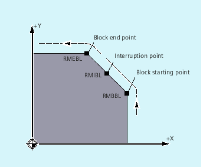
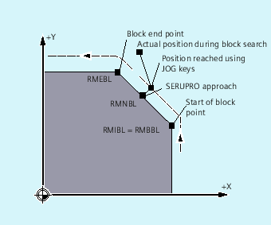
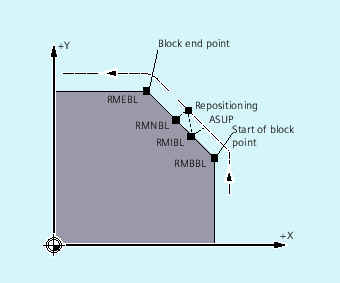
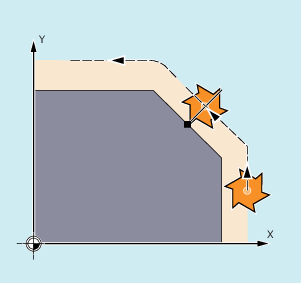

With reference to the NC block in which the program run has been interrupted, it is possible to select one of three different repositioning points:
RMIBL, interruption point
RMBBL, block start point or last end point
RMEBL, block end point

RMIBL DISPR=… or RME DISPR=… allows you to select a repositioning point which lies before the interruption point or the block end point.
DISPR=… allows you to describe the contour distance in mm/inch between the repositioning point and the interruption before the end point. Even for high values, this point cannot be further away than the block start point.
If no DISPR=… command is programmed, then DISPR=0 applies and with it the interruption point (with RMIBL) or the block end point (with RMEBL).
The sign of DISPR is evaluated. In the case of a plus sign, the behavior is as previously.
In the case of a minus sign, approach is behind the interruption point or, with RMBBL, behind the block start point.
The distance between interruption point and approach point depends on the value of DISPR. Even for higher values, this point can lie in the block end point at the maximum.
A sensor will recognize the approach to a clamp. An ASUB is initiated to bypass the clamp.
Afterwards, a negative DISPR is repositioned on one point behind the clamp and the program is continued.
If an abort is forced during machining at any position, the shortest path from the abort point is approached with SERUPRO approach and RMNBL so that afterward only the distance-to-go is processed. The user starts a SERUPRO process at the interruption block and uses the JOG keys to move in front of the problem component of the target block.
| Note |
SERUPROFor SERUPRO, RMIBL and RMBBL are identical. RMNBL is not only limited to SERUPRO, but is generally valid. |
When REPOSA is interpreted, the repositioning block with RMNBL is not started again in full after an interruption, but only the distance-to-go processed. The nearest path point of the interrupted block is approached.
The valid REPOS mode of the interrupted block can be read with synchronized actions and variable $AC_ REPOS_PATH_MODE:
0 | Approach not defined |
1 | RMBBL: Approach to beginning |
2 | RMIBL: Approach to point of interruption |
3 | RMEBL: Approach to end of block |
4 | RMNBL: Approach to next path point of the interrupted block |
The following applies if you have stopped the program run due to tool breakage:
When the new D number is programmed, the machining program is continued with modified tool offset values at the repositioning point.
Where tool offset values have been modified, it may not be possible to reapproach the interruption point. In such cases, the point closest to the interruption point on the new contour is approached (possibly modified by DISPR).
The motion with which the tool is repositioned on the contour can be programmed. Enter zero for the addresses of the axes to be traversed.
The REPOSA, REPOSQA and REPOSHA commands automatically reposition all axes. Individual axis names need not be specified.
When the commands REPOSL, REPOSQ and REPOSH are programmed, all geometry axes are traversed automatically, i.e. they do not have to be specified in the command. All other axes must be specified in the commands.
The circle is traversed in the specified working planes G17 to G19.
If you specify the third geometry axis (infeed direction) in the approach block, the repositioning point is approached along a helix in case the tool position and programmed position in the infeed direction do not coincide.
In the following cases, there is an automatic switchover to linear approach REPOSL: